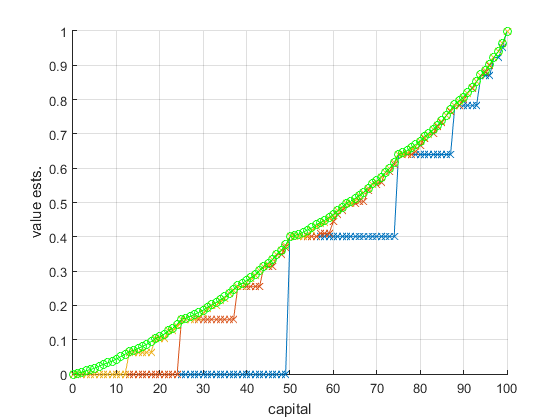
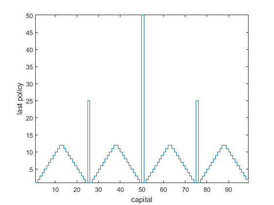

clc;
close all;
gamma = 1;
n_non_term_states=99;
n_states=n_non_term_states+2;
V = zeros(1,n_states); V(1)=0.0; V(end)=1.0;
p_heads = 0.4;
thetaThreshold = 1e-8;
plotIters = [ 1, 2, 3, 32 ];
delta = +Inf; iterCnts = 0;
fhs=figure; hold on; grid on;
while( delta > thetaThreshold )
iterCnts=iterCnts+1;
delta = 0;
for si=2:n_states-1,
v = V(si);
s = si-1;
acts = 1:min(s,(n_states-1)-s); Q = [];
for ai=1:length(acts),
Q(ai) = gam_rhs_state_bellman(s,acts(ai),V,gamma,p_heads);
end
V(si) = max(Q);
delta = max(delta,abs(v-V(si)));
end
if( isempty( setdiff( [iterCnts], plotIters ) ) )
figure(fhs); plot( 0:(n_states-1), V, '-x' ); axis tight; drawnow;
end
end
figure(fhs); plot( 0:(n_states-1), V, '-go' ); xlabel('capital'); ylabel('value ests.'); axis tight; drawnow;
fn='gam_state_value_fns.eps'; saveas( gcf, fn, 'epsc' );
eps_pol = 1e-8;
pol_pi = zeros(1,n_states-2);
for si=2:n_states-1,
s = si-1;
acts = 1:min(s,(n_states-1)-s);
Q = []; bestVal=-Inf; bestAct=0;
for ai=1:length(acts),
Q(ai) = gam_rhs_state_bellman(s,acts(ai),V,gamma,p_heads);
if( bestVal<(Q(ai)-eps_pol) )
bestVal=Q(ai);
bestAct=ai;
end
end
pol_pi(si-1) = bestAct;
end
if( 1 )
figure; stairs( 1:(n_states-2), pol_pi ); xlabel('capital'); ylabel('last policy'); axis tight; drawnow;
fn='gam_final_policy.eps'; saveas( gcf, fn, 'epsc' );
end
return;
 